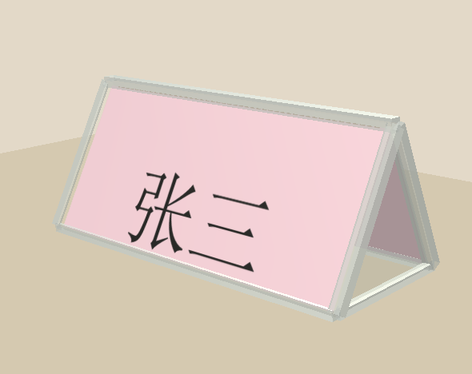
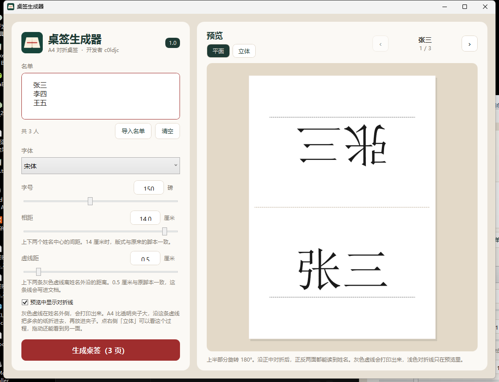

桌签生成器
专为会议、接待和培训场景设计，支持批量导入名单，一键生成双面正向显示的桌签，告别在 Word 里逐页手动修改的繁琐操作。


一页一个人，A4 纵向，页边距为零。上半页的名字旋转 180 度，下半页正着放。沿页中对折后，对面看到的也是正的。
姓名外侧有两条灰色虚线，会印出来，那就是折进夹子的位置。页中间的对折痕迹只在预览里，不写进文档。虚线以外不印名字，折进去的是空白。
常见的透明桌签夹装不下一整张 A4，夹子还有大有小。把虚线移近或移远，折进去的边就跟着变。虚线在哪里，就从哪里折。
名单是一份文本，一行一个名字，UTF-8 和 GBK 都可以。程序直接写成文档，打印即可，不用先打开 Word。